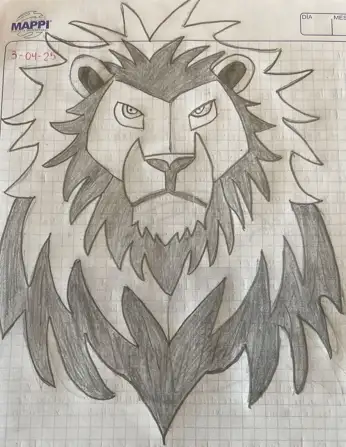

PERFIL DE UN EMPRENDEDOR

Con el siguiente dibujo se busco representar el espiritu de un perfil emprendedor.
- Iniciativa, escucha, liderazgo, empatia y visión.
- Responsable, creativo, trabajo en equipo, apoyo, estratega y resilente.
- Adaptabilidad,persuacion, confianza, seguridad.